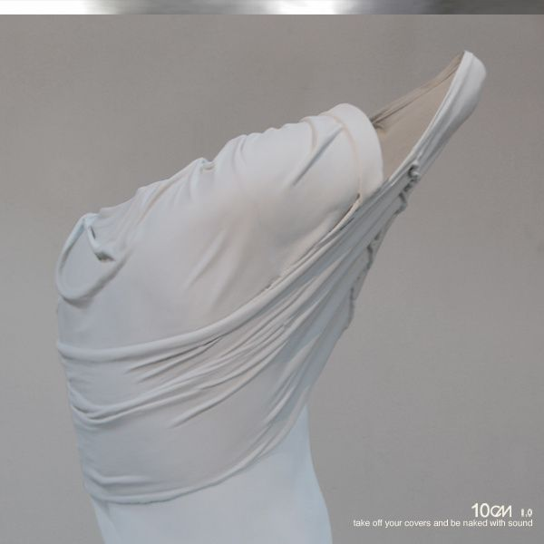
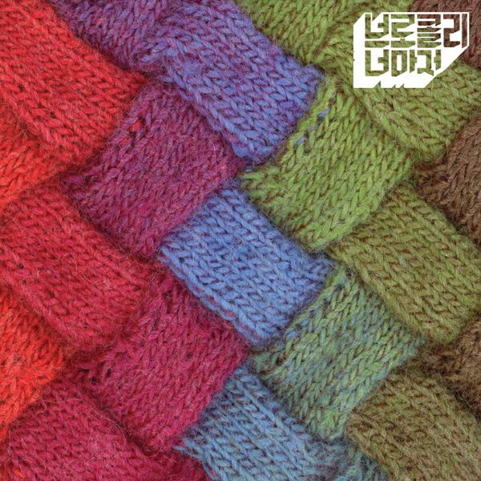
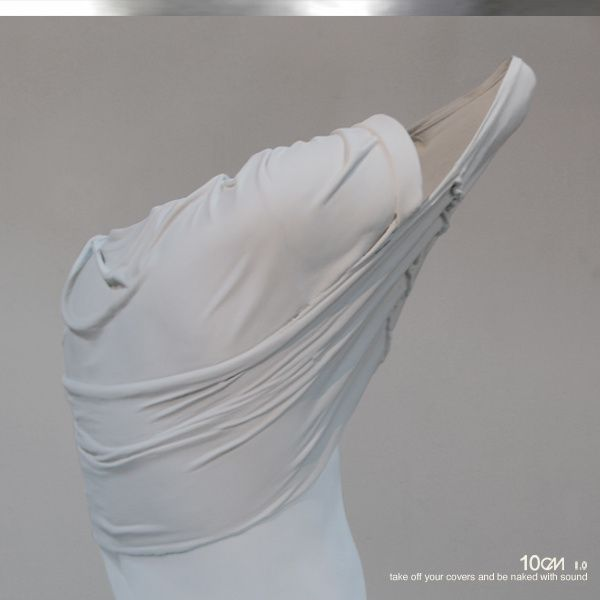
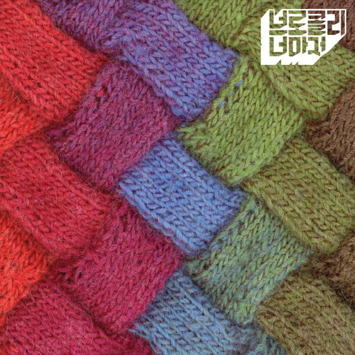

안녕하세요
제가 듣는 노래들을 다른사람도 들으면서 새벽감성에 빠지면 좋겠다는 바라는 마음으로
새벽에 듣는 저의 플레이리스트를 풀어보겠습니다.
저는 주로 노래들을 들으면서 새벽에 여러분들이 아는 새벽감성에 빠지곤 합니다.
나지막히 들려오는 가수분의 목소리와 가사의 진정성이 저의 마음을 울려주는 것이 많이 힐링이 됩니다.
그러니 여러분도 나지막히 들려오는 가수분의 목소리와 가사에 빠져 마음을 편안하게 해주었으면 좋겠어요.
 



| 1 | 도망가자 | 선우정아 |
| 2 | 바람이 분다 | 이소라 |
| 3 | 그러나 | 10CM |
| 4 | 스토커 | 10CM |
| 5 | 나를 사랑하지 않는 그대에게 | 이소라 |
| 6 | 사랑은 은하수 다방에서 | 10CM |
| 7 | 고백 | 델리 스파이스 |
| 8 | 앵콜요청금지 | 브로콜리너마저 |